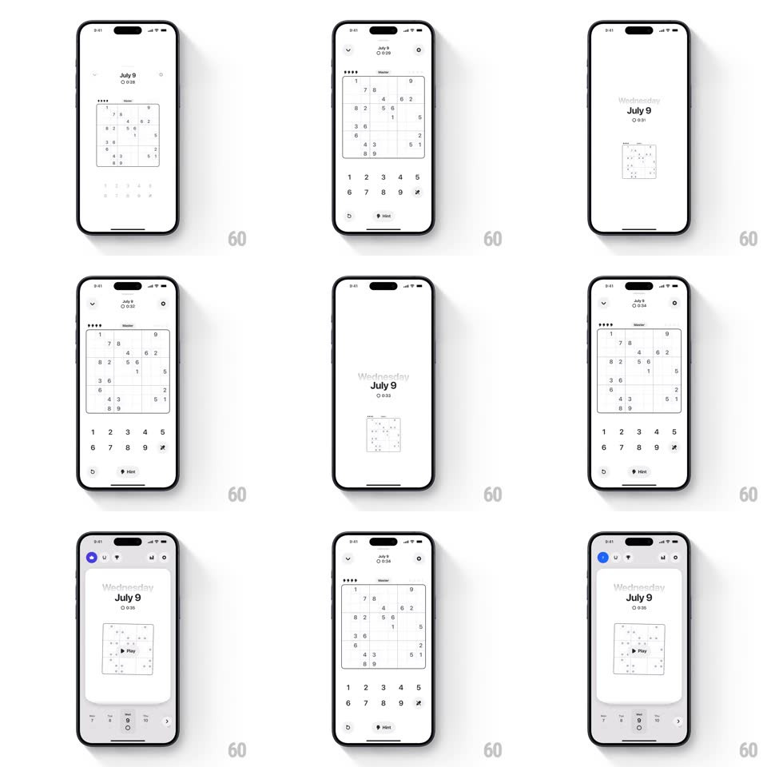

Media
Frame-by-frame

Rebuild this interaction 1:1: the Sudoku app's pull-to-dismiss - dragging down shrinks the live game board into a card, revealing the home screen underneath, and releasing decides between closing and springing back.

Rebuild this interaction 1:1: the Sudoku app's pull-to-dismiss - dragging down shrinks the live game board into a card, revealing the home screen underneath, and releasing decides between closing and springing back. ## Integration Integration: stack-agnostic spec - springs given as stiffness/damping, timed motions as duration + curve; map every value to your framework and animation library of choice. ## Scene A minimal Sudoku game screen (date, timer, difficulty, the 9x9 board, number pad, Hint button) over the home screen (a "Wednesday July 9" puzzle card with a Play button). ## Motion spec Pattern: pull-down-to-dismiss with card morph, gesture-driven. - Drag: pulling down translates the whole game view down slightly (resisted, 0.4x factor) while the board region scales down toward center (1 -> 0.5 across a full-screen drag) and its corner radius grows (0 -> 24px); the number pad and chrome fade out first (by 30% drag). - Reveal: the home screen fades in beneath from slight scale (1.05 -> 1) as the game shrinks. - Release: past ~35% drag or a downward fling, the card animates into its home slot (spring ~320/24, 350ms) completing the dismissal; otherwise everything springs back to the full game (spring ~360/22, 300ms). - The timer and board state persist - reopening returns to the same game. ## Calibration - The morph is continuous with the finger - no discrete steps. - Chrome fades before the board scales, keeping the board legible longest. ## Reduced motion A simple slide-down dismiss (300ms), no scale morph. ## Don't miss - The game becomes the home card - same puzzle, shrunk - not a generic sheet disappearing. - The resisted drag gives physical weight; the board never outruns the finger.